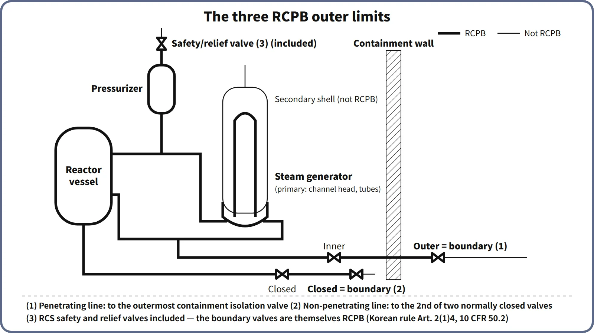

Systems & Equipment · C-SY-009
Reactor Coolant Pressure Boundary (RCPB) — Definition, the Three Outer Limits and the Design and Inspection Requirements
Where the primary pressure boundary ends on connected piping, why it differs from Safety Class 1, and the requirements that keep it intact.
The reactor coolant pressure boundary (RCPB) is made up of the pressure vessels, piping, pumps and valves that hold primary-coolant pressure: the reactor coolant system itself plus the piping connected to it, extending (1) for piping that penetrates containment, to the outermost containment isolation valve, (2) for piping that does not penetrate containment, to the second of two valves normally closed during operation, and (3) including the reactor coolant system safety and relief valves.
This three-item definition is the one given, for example, in US 10 CFR 50.2. As a barrier, the RCPB is the third barrier after the fuel pellet and the cladding.
Principle and mechanism
Why the boundary is drawn at valves
Piping attached to the RCS sees the same high-pressure, high-temperature coolant as the RCS until a valve closes. "How far does RCS pressure reach?" is therefore answered by valves.
- Penetrating piping, up to the outermost containment isolation valve: a break in the section outside containment would let coolant bypass the containment barrier. The piping is therefore built to pressure-boundary quality up to the isolation valve on the outside of containment.
- Non-penetrating piping, up to the second of two closed valves: a single valve that is closed during normal operation cannot cover seat leakage or inadvertent opening of that valve. RCS pressure is considered reliably cut off only at the second closed valve. Series check valves on a safety injection tank discharge line are a typical example.
- Safety and relief valves included: the valve body and disc are directly loaded by RCS pressure, and a valve stuck open is itself a small-break LOCA (the TMI-2 PORV).
- Direct-cycle BWRs: the boundary includes the main steam and main feedwater lines up to the outermost containment isolation valve. In a PWR, main steam and feedwater belong to the secondary system and are not part of the RCPB.
![Decision flow for the RCPB outer limits: a pressure-retaining RCS component is RCPB; a connected component is included up to its outer-limit valve, which is the outermost containment isolation valve for penetrating piping, the second of two normally closed valves for non-penetrating piping, and the safety and relief valves themselves; illustrated by a containment penetration with inner and outer isolation valves, a non-penetrating line with two closed check valves, and a pressurizer POSRV, with a note that RCPB scope differs from ASME Class 1 scope](../../assets/images/concepts/c-sy-009-rcpb/fig1-rcpb-outer-limits.webp)
RCPB is not the same as Safety Class 1
In principle the RCPB is built to ASME III Class 1 (Safety Class 1) (10 CFR 50.55a(c)(1)). However, RCPB components connected to the RCS are exempt from the Class 1 requirements if they meet either of two conditions (50.55a(c)(2)).
- Normal make-up condition: if the component failed during normal operation, the reactor could be shut down and cooled down in an orderly manner using the normal make-up system (charging pumps) alone. This mostly covers small-bore piping and instrument lines.
- Isolation condition: the component is, or can be, isolated by two valves in series. An open valve must actuate automatically, and its closing time must satisfy the shutdown-and-cooldown condition above.
The RCPB scope is therefore written from the 10 CFR 50.2 definition and kept separate from the Safety Class 1 scope.
What it means in a plant
Components (PWR example)
The reactor vessel and closure-head penetrations (control element drive mechanism pressure housings, instrument penetrations), hot and cold legs, the primary side of the steam generators (channel heads, tubesheet, tubes), the reactor coolant pump casings, the pressurizer and surge line, the pressurizer spray line and safety valves (POSRVs in the APR1400), and the connected lines (charging, letdown, safety injection, shutdown cooling suction, drains, instrument lines) up to their outer-limit valves. The steam generator tubes are the boundary between primary and secondary at the same time; the secondary-side shell is not part of the RCPB.
Design requirements: the pressure and loading ladder
| Reference line | Meaning | APR1400 example |
|---|---|---|
| Normal operating pressure | Operating state (Service Level A conditions) | 2,250 psia (15.51 MPa) |
| Design pressure | Design limit; the POSRV setpoint sits just below it | 2,500 psia (17.24 MPa), POSRV 2,470 psia |
| Overpressure limit | Design pressure × 110 % (ASME III overpressure protection limit); RCS pressure safety limit | 2,750 psia (18.96 MPa) |
| Hydrostatic test (reference) | At least design pressure × 1.25 (ASME III NB-6221) | About 3,106 psig (example calculation) |
| ATWS peak (reference) | ASME Service Level C acceptance basis | About 3,200 psig (22.06 MPa(g)) |
Service Levels A–D are evaluation criteria for loading conditions, not points on a pressure scale. Read the hydrostatic test and ATWS values as reference criteria that apply to different states and conditions from normal operation.
GDC 15 requires the RCS and its auxiliary, control and protection systems to have enough margin that RCPB design conditions are not exceeded, including during anticipated operational occurrences.
![Vertical pressure axis from 14 to 23 MPa absolute for the APR1400 example, with normal operation 15.51 MPa (2,250 psia), POSRV setpoint 17.03 MPa (2,470 psia), design pressure 17.24 MPa (2,500 psia) and the overpressure limit and RCS pressure safety limit 18.96 MPa (2,750 psia, design times 110 %), plus dashed reference lines for the minimum hydrostatic test near 21.52 MPa and the ATWS peak-pressure criterion near 22.16 MPa; beside it a table of GDC criteria and codes or guides for design, fabrication, operation and inspection, and an LBB box with margins of 10 on leak rate and 2 on crack size](../../assets/images/concepts/c-sy-009-rcpb/fig2-rcpb-pressure-ladder.webp)
Materials and fracture prevention
- Reactor vessel: SA-508 Gr.3 low-alloy steel with weld-deposited stainless steel cladding. In the beltline, neutron irradiation raises RTNDT and lowers the upper-shelf energy (USE). This is managed with the Appendix G P–T limits (USE ≥ 102 J initially and ≥ 68 J throughout life) and the Appendix H surveillance program, and checked against the PTS screening criteria of 270/300 °F (132/149 °C).
- Ferritic materials: fracture toughness is confirmed by Charpy and drop-weight tests under ASME III NB-2300. This underpins the "non-brittle behavior" required by GDC 31.
- Nickel alloys and stainless steel: because of PWSCC in Alloy 600/82/182, penetrations and dissimilar-metal welds are being replaced with Alloy 690/52/152. Austenitic stainless steel is managed against sensitization.
Monitoring in operation: leakage, inspection and LBB
- Leak detection: under GDC 30, leakage must be detected quickly and located as far as practicable. RG 1.45 Rev. 1 requires at least two independent and diverse methods able to detect 1 gpm within 1 hour.
- In-service inspection (ISI): under ASME XI IWB, the reactor vessel, nozzles, piping welds and bolting receive volumetric, surface and visual examinations over every 10-year inspection interval, and a system leakage test is performed every refueling cycle.
- LBB (leak-before-break): if it is demonstrated that the piping will show detectable leakage before it breaks, GDC 4 allows dynamic effects such as pipe whip and jet impingement to be excluded from the design. SRP 3.6.3 requires a margin of 10 on leak rate and a margin of 2 on crack size. The design-basis breaks for the ECCS and containment remain unchanged.
Regulatory and design criteria
The criteria below are examples from the United States (US NRC) and the ASME Code.
| Basis | Key point |
|---|---|
| 10 CFR 50.2, 50.55a(c) and (g) | Definition; Class 1 and the exemption conditions; ISI (ASME XI) |
| GDC 14, 15, 30, 31, 32 (Appendix A) | Probability of failure, design margin, quality and leak detection, fracture prevention, inspection and surveillance |
| 10 CFR 50 Appendices G and H, 50.61 | Fracture toughness and P–T limits, surveillance, PTS |
| RG 1.45, SRP 3.6.3 and 5.2.5 | Leak detection, LBB |
Easily confused pairs
| RCPB | Safety Class 1 | RCS | |
|---|---|---|---|
| Basis | Extent that holds pressure (10 CFR 50.2) | Safety function and consequence of failure (10 CFR 50.55a(c)) | Functional system |
| Scope | RCS + connected piping up to the outer-limit valves | Parts of the RCPB whose failure could cause a loss of coolant exceeding normal make-up capability | Vessel, loops, pressurizer |
| Small-bore connected lines | Included | Can be exempted (usually Class 2) | No |
The relationship with containment isolation valves is another common source of confusion. An isolation valve is part of the containment barrier, and on penetrating piping the outermost valve is also the end of the RCPB. Pressure isolation valves (PIVs) between the high-pressure RCS and low-pressure systems are managed as two valves in series with leak testing (STS 3.4.14: 0.5 gpm per nominal inch, 5 gpm maximum). If this boundary fails, the result is an interfacing-systems LOCA.
Key points at a glance
- Definition: the pressure vessels, piping, pumps and valves that hold primary-coolant pressure (for example, 10 CFR 50.2).
- Outer limit (1): piping that penetrates containment, up to the outermost containment isolation valve.
- Outer limit (2): piping that does not penetrate containment, up to the second of two valves normally closed during operation.
- Outer limit (3): the RCS safety and relief valves are included (in a direct-cycle BWR, up to the outermost isolation valves of main steam and main feedwater).
- Valve criteria: the three boundary-valve rules; Class 1 exemption when within normal make-up capability or isolated by two series valves (open valve actuates automatically); high/low-pressure interfaces protected by double PIVs with leak testing.
- Design: GDC 14, 15, 30, 31, 32; ASME III Class 1; overpressure ≤ 110 %.
- Materials and inspection: fracture toughness (Appendices G and H, PTS), ISI (ASME XI, 10 years), at least two leak-detection methods (1 gpm in 1 h), LBB.
- Significance: the third barrier; failure = LOCA; its scope differs from Safety Class 1.
